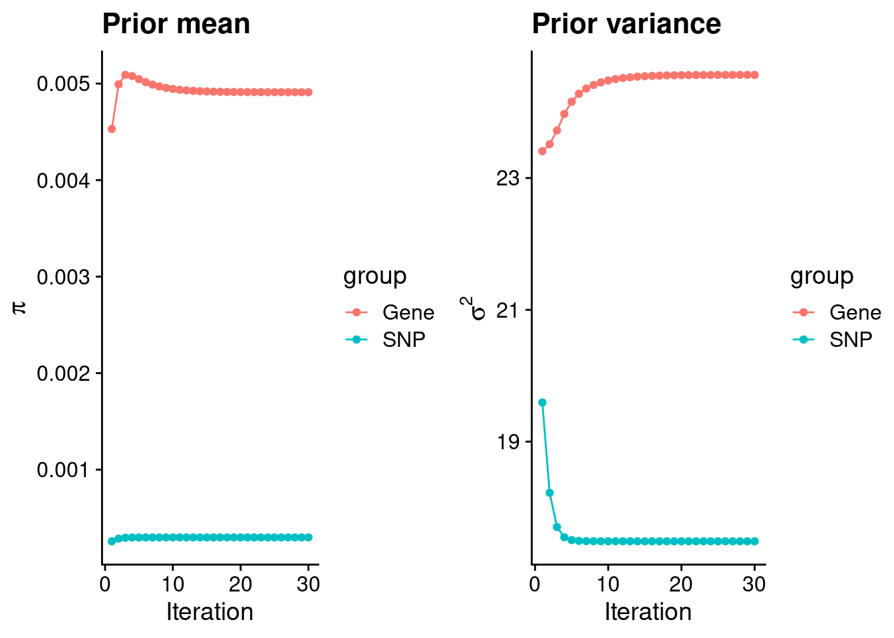
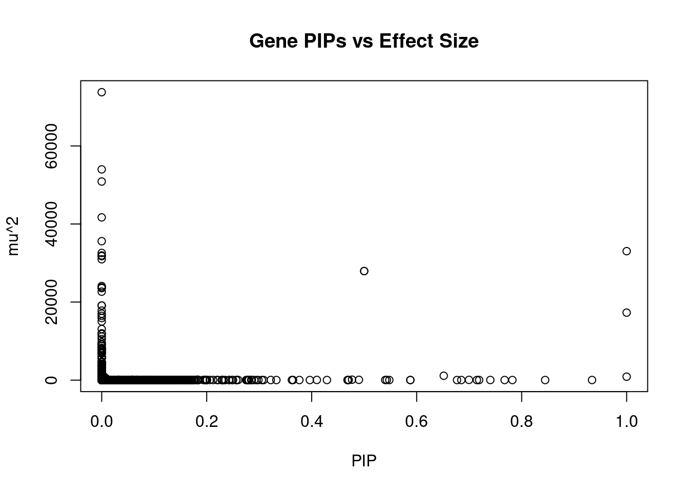
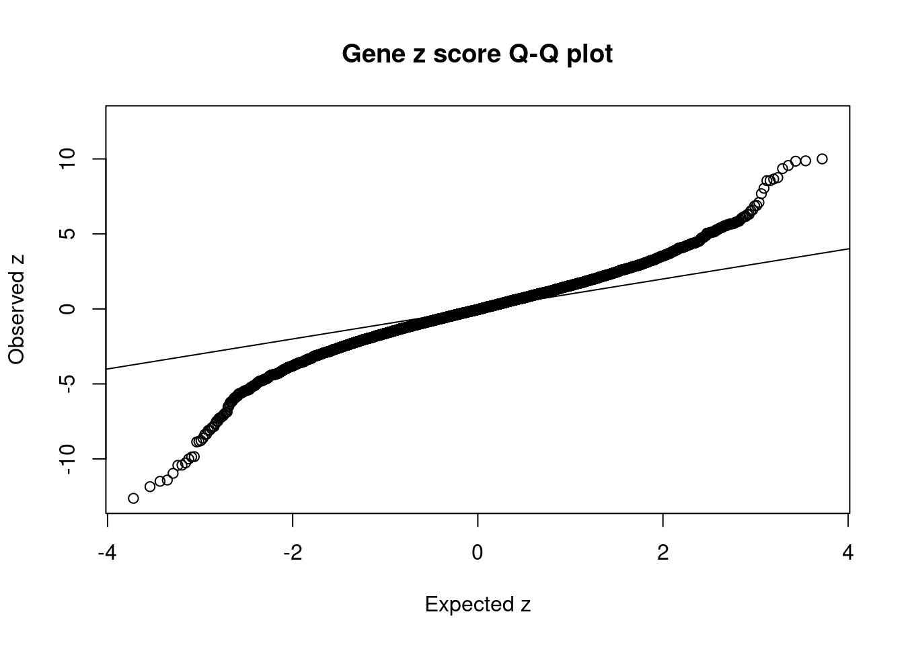
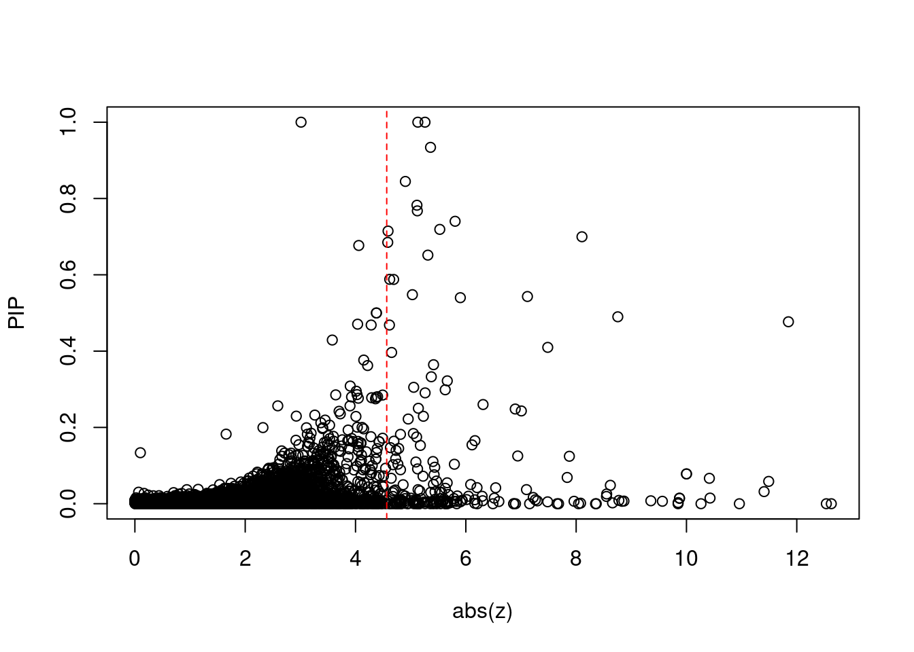
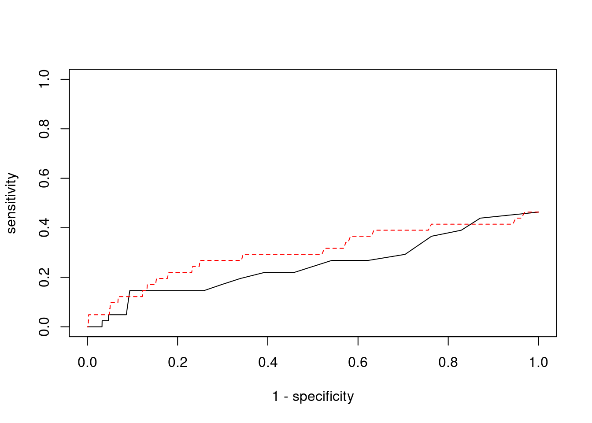

Last updated: 2022-02-13
Checks: 6 1
Knit directory: cTWAS_analysis/
This reproducible R Markdown analysis was created with workflowr (version 1.6.2). The Checks tab describes the reproducibility checks that were applied when the results were created. The Past versions tab lists the development history.
Great! Since the R Markdown file has been committed to the Git repository, you know the exact version of the code that produced these results.
Great job! The global environment was empty. Objects defined in the global environment can affect the analysis in your R Markdown file in unknown ways. For reproduciblity it’s best to always run the code in an empty environment.
The command set.seed(20211220) was run prior to running the code in the R Markdown file. Setting a seed ensures that any results that rely on randomness, e.g. subsampling or permutations, are reproducible.
Great job! Recording the operating system, R version, and package versions is critical for reproducibility.
Nice! There were no cached chunks for this analysis, so you can be confident that you successfully produced the results during this run.
Using absolute paths to the files within your workflowr project makes it difficult for you and others to run your code on a different machine. Change the absolute path(s) below to the suggested relative path(s) to make your code more reproducible.
| absolute | relative |
|---|---|
| /project2/xinhe/shengqian/cTWAS/cTWAS_analysis/data/ | data |
| /project2/xinhe/shengqian/cTWAS/cTWAS_analysis/code/ctwas_config.R | code/ctwas_config.R |
Great! You are using Git for version control. Tracking code development and connecting the code version to the results is critical for reproducibility.
The results in this page were generated with repository version eb13ecf. See the Past versions tab to see a history of the changes made to the R Markdown and HTML files.
Note that you need to be careful to ensure that all relevant files for the analysis have been committed to Git prior to generating the results (you can use wflow_publish or wflow_git_commit). workflowr only checks the R Markdown file, but you know if there are other scripts or data files that it depends on. Below is the status of the Git repository when the results were generated:
Ignored files:
Ignored: .ipynb_checkpoints/
Untracked files:
Untracked: code/.ipynb_checkpoints/
Untracked: code/AF_out/
Untracked: code/BMI_out/
Untracked: code/T2D_out/
Untracked: code/ctwas_config.R
Untracked: code/mapping.R
Untracked: code/out/
Untracked: code/run_AF_analysis.sbatch
Untracked: code/run_AF_analysis.sh
Untracked: code/run_AF_ctwas_rss_LDR.R
Untracked: code/run_BMI_analysis.sbatch
Untracked: code/run_BMI_analysis.sh
Untracked: code/run_BMI_ctwas_rss_LDR.R
Untracked: code/run_T2D_analysis.sbatch
Untracked: code/run_T2D_analysis.sh
Untracked: code/run_T2D_ctwas_rss_LDR.R
Untracked: data/.ipynb_checkpoints/
Untracked: data/AF/
Untracked: data/BMI/
Untracked: data/T2D/
Untracked: data/UKBB/
Untracked: data/UKBB_SNPs_Info.text
Untracked: data/gene_OMIM.txt
Untracked: data/gene_pip_0.8.txt
Untracked: data/mashr_Heart_Atrial_Appendage.db
Untracked: data/summary_known_genes_annotations.xlsx
Untracked: data/untitled.txt
Note that any generated files, e.g. HTML, png, CSS, etc., are not included in this status report because it is ok for generated content to have uncommitted changes.
These are the previous versions of the repository in which changes were made to the R Markdown (analysis/BMI_Brain_Substantia_nigra.Rmd) and HTML (docs/BMI_Brain_Substantia_nigra.html) files. If you’ve configured a remote Git repository (see ?wflow_git_remote), click on the hyperlinks in the table below to view the files as they were in that past version.
| File | Version | Author | Date | Message |
|---|---|---|---|---|
| Rmd | eb13ecf | sq-96 | 2022-02-13 | update |
| html | e6bc169 | sq-96 | 2022-02-13 | Build site. |
| Rmd | 87fee8b | sq-96 | 2022-02-13 | update |
[1] 10051
1 2 3 4 5 6 7 8 9 10 11 12 13 14 15 16 17 18 19 20
966 710 602 390 478 579 472 391 399 396 602 539 215 330 338 461 604 154 780 312
21 22
112 221 [1] 8301[1] 0.825888
********************************************************Note: As of version 1.0.0, cowplot does not change the default ggplot2 theme anymore. To recover the previous behavior, execute:
theme_set(theme_cowplot())********************************************************
| Version | Author | Date |
|---|---|---|
| e6bc169 | sq-96 | 2022-02-13 |
gene snp
0.0049107256 0.0002977865 gene snp
24.56540 17.48755 [1] 336107[1] 10051 7535010 gene snp
0.003607458 0.116745517 [1] 0.2471619 16.0925252
| Version | Author | Date |
|---|---|---|
| e6bc169 | sq-96 | 2022-02-13 |
genename region_tag susie_pip mu2 PVE z
6994 CCDC127 5_1 1.0000000 17290.64486 5.144387e-02 3.012479
9381 GSAP 7_49 1.0000000 33042.00500 9.830799e-02 5.259703
6940 PPM1M 3_36 0.9999999 883.38639 2.628289e-03 5.129660
3273 FLT3 13_7 0.9340466 33.53520 9.319484e-05 -5.359706
9286 MAPK11 22_24 0.8447064 26.72102 6.715545e-05 4.903816
7028 ZNF12 7_9 0.7823683 27.50645 6.402774e-05 5.113852
8362 PACS1 11_36 0.7675781 30.12408 6.879530e-05 5.120810
1149 DYNLL1 12_74 0.7402785 37.62929 8.287883e-05 -5.805664
10169 PRMT6 1_66 0.7190182 33.45711 7.157325e-05 5.527740
11016 CCDC188 22_4 0.7147014 25.32866 5.385912e-05 4.589737
3302 ZMIZ2 7_33 0.6997057 66.52613 1.384937e-04 -8.105339
2386 HPS5 11_13 0.6850092 25.31499 5.159370e-05 -4.584463
2668 PDCD10 3_103 0.6768668 24.03800 4.840876e-05 -4.058682
3354 WWP1 8_61 0.6515835 1124.53697 2.180049e-03 5.311884
1166 KIF16B 20_12 0.5881142 25.02550 4.378918e-05 -4.619896
1275 CBX5 12_33 0.5878224 25.63231 4.482872e-05 -4.691159
4143 AGAP3 7_94 0.5478985 26.83603 4.374624e-05 -5.031098
11192 ATP5J2 7_61 0.5431225 53.46787 8.639988e-05 -7.116991
12531 RP5-965G21.3 20_19 0.5400521 36.59989 5.880820e-05 -5.900553
9907 MRPL21 11_38 0.5000000 27942.14479 4.156734e-02 4.378813
num_eqtl
6994 1
9381 1
6940 3
3273 1
9286 1
7028 2
8362 2
1149 1
10169 1
11016 1
3302 1
2386 2
2668 2
3354 2
1166 1
1275 1
4143 2
11192 1
12531 2
9907 1
| Version | Author | Date |
|---|---|---|
| e6bc169 | sq-96 | 2022-02-13 |
genename region_tag susie_pip mu2 PVE z
9 SEMA3F 3_35 0.000000e+00 73762.79 0.000000e+00 7.681163
6937 CAMKV 3_35 0.000000e+00 53990.32 0.000000e+00 -9.847856
7091 CCDC171 9_13 0.000000e+00 50878.51 0.000000e+00 8.043445
33 RBM6 3_35 0.000000e+00 41693.00 0.000000e+00 12.536042
6938 MST1R 3_35 0.000000e+00 35597.35 0.000000e+00 -12.625869
9381 GSAP 7_49 1.000000e+00 33042.01 9.830799e-02 5.259703
8677 DHFR2 3_59 0.000000e+00 32585.08 0.000000e+00 5.146136
2783 CHST10 2_58 3.785668e-10 31945.71 3.598136e-11 4.806518
8680 STX19 3_59 0.000000e+00 31753.31 0.000000e+00 -5.106307
10629 SLC35E2 1_1 0.000000e+00 30962.05 0.000000e+00 5.161147
4077 IGHMBP2 11_38 5.000000e-01 27942.14 4.156734e-02 -4.378813
9907 MRPL21 11_38 5.000000e-01 27942.14 4.156734e-02 4.378813
4918 MFAP1 15_16 2.759237e-12 24102.10 1.978638e-13 4.302998
4364 HEY2 6_84 0.000000e+00 23770.72 0.000000e+00 3.066031
6934 RNF123 3_35 0.000000e+00 23571.65 0.000000e+00 -10.959165
11239 NAT6 3_35 0.000000e+00 22663.77 0.000000e+00 -7.156118
4757 TMOD3 15_21 0.000000e+00 19109.48 0.000000e+00 5.411998
2819 PLCL1 2_117 0.000000e+00 19108.09 0.000000e+00 -5.641781
6966 RNF180 5_39 0.000000e+00 17815.37 0.000000e+00 -3.716958
6994 CCDC127 5_1 1.000000e+00 17290.64 5.144387e-02 3.012479
num_eqtl
9 1
6937 1
7091 2
33 1
6938 1
9381 1
8677 1
2783 1
8680 1
10629 1
4077 1
9907 1
4918 1
4364 1
6934 1
11239 2
4757 1
2819 1
6966 2
6994 1 genename region_tag susie_pip mu2 PVE z
9381 GSAP 7_49 1.0000000 33042.00500 9.830799e-02 5.259703
6994 CCDC127 5_1 1.0000000 17290.64486 5.144387e-02 3.012479
9907 MRPL21 11_38 0.5000000 27942.14479 4.156734e-02 4.378813
4077 IGHMBP2 11_38 0.5000000 27942.14479 4.156734e-02 -4.378813
6940 PPM1M 3_36 0.9999999 883.38639 2.628289e-03 5.129660
3354 WWP1 8_61 0.6515835 1124.53697 2.180049e-03 5.311884
8340 ASPHD1 16_24 0.4769197 118.32804 1.679018e-04 -11.848514
3302 ZMIZ2 7_33 0.6997057 66.52613 1.384937e-04 -8.105339
6156 GPR61 1_67 0.4899728 80.05027 1.166963e-04 8.755235
3273 FLT3 13_7 0.9340466 33.53520 9.319484e-05 -5.359706
11192 ATP5J2 7_61 0.5431225 53.46787 8.639988e-05 -7.116991
1149 DYNLL1 12_74 0.7402785 37.62929 8.287883e-05 -5.805664
10169 PRMT6 1_66 0.7190182 33.45711 7.157325e-05 5.527740
8362 PACS1 11_36 0.7675781 30.12408 6.879530e-05 5.120810
10689 VPS52 6_28 0.1824050 125.79735 6.827010e-05 1.654339
9286 MAPK11 22_24 0.8447064 26.72102 6.715545e-05 4.903816
8106 EFEMP2 11_36 0.4098074 53.04107 6.467173e-05 -7.485067
7028 ZNF12 7_9 0.7823683 27.50645 6.402774e-05 5.113852
12531 RP5-965G21.3 20_19 0.5400521 36.59989 5.880820e-05 -5.900553
11016 CCDC188 22_4 0.7147014 25.32866 5.385912e-05 4.589737
num_eqtl
9381 1
6994 1
9907 1
4077 1
6940 3
3354 2
8340 1
3302 1
6156 1
3273 1
11192 1
1149 1
10169 1
8362 2
10689 2
9286 1
8106 2
7028 2
12531 2
11016 1 genename region_tag susie_pip mu2 PVE z
6938 MST1R 3_35 0.000000e+00 35597.35302 0.000000e+00 -12.625869
33 RBM6 3_35 0.000000e+00 41693.00270 0.000000e+00 12.536042
8340 ASPHD1 16_24 4.769197e-01 118.32804 1.679018e-04 -11.848514
8341 KCTD13 16_24 5.852635e-02 113.47464 1.975935e-05 -11.490673
8339 SEZ6L2 16_24 3.176602e-02 111.72337 1.055916e-05 -11.407378
6934 RNF123 3_35 0.000000e+00 23571.65449 0.000000e+00 -10.959165
5905 POC5 5_44 1.482251e-02 92.04965 4.059442e-06 -10.427519
9879 SULT1A2 16_23 6.661068e-02 96.31489 1.908797e-05 -10.415275
9829 C6orf106 6_28 3.807837e-05 122.39974 1.386696e-08 -10.263559
7444 ZNF668 16_24 7.817032e-02 79.04914 1.838491e-05 10.000364
7445 ZNF646 16_24 7.817032e-02 79.04914 1.838491e-05 -10.000364
1759 KAT8 16_24 1.419544e-02 75.60320 3.193092e-06 -9.874112
1758 BCKDK 16_24 1.464206e-02 75.71845 3.298575e-06 9.873394
5100 SAE1 19_33 3.006123e-03 100.74249 9.010355e-07 9.848747
6937 CAMKV 3_35 0.000000e+00 53990.32363 0.000000e+00 -9.847856
8065 C1QTNF4 11_29 6.441163e-03 88.84710 1.702668e-06 9.563515
10961 RP11-196G11.6 16_24 7.677243e-03 69.97011 1.598234e-06 9.353974
7210 PSMC3 11_29 6.912316e-03 77.51555 1.594171e-06 -8.866477
7209 SLC39A13 11_29 6.349526e-03 76.24362 1.440348e-06 -8.831101
8448 NUPR1 16_23 8.723499e-03 68.69643 1.782983e-06 -8.775058
num_eqtl
6938 1
33 1
8340 1
8341 1
8339 1
6934 1
5905 1
9879 1
9829 1
7444 1
7445 1
1759 2
1758 1
5100 1
6937 1
8065 1
10961 2
7210 1
7209 1
8448 1
| Version | Author | Date |
|---|---|---|
| e6bc169 | sq-96 | 2022-02-13 |

| Version | Author | Date |
|---|---|---|
| e6bc169 | sq-96 | 2022-02-13 |
[1] 0.0200975 genename region_tag susie_pip mu2 PVE z
6938 MST1R 3_35 0.000000e+00 35597.35302 0.000000e+00 -12.625869
33 RBM6 3_35 0.000000e+00 41693.00270 0.000000e+00 12.536042
8340 ASPHD1 16_24 4.769197e-01 118.32804 1.679018e-04 -11.848514
8341 KCTD13 16_24 5.852635e-02 113.47464 1.975935e-05 -11.490673
8339 SEZ6L2 16_24 3.176602e-02 111.72337 1.055916e-05 -11.407378
6934 RNF123 3_35 0.000000e+00 23571.65449 0.000000e+00 -10.959165
5905 POC5 5_44 1.482251e-02 92.04965 4.059442e-06 -10.427519
9879 SULT1A2 16_23 6.661068e-02 96.31489 1.908797e-05 -10.415275
9829 C6orf106 6_28 3.807837e-05 122.39974 1.386696e-08 -10.263559
7444 ZNF668 16_24 7.817032e-02 79.04914 1.838491e-05 10.000364
7445 ZNF646 16_24 7.817032e-02 79.04914 1.838491e-05 -10.000364
1759 KAT8 16_24 1.419544e-02 75.60320 3.193092e-06 -9.874112
1758 BCKDK 16_24 1.464206e-02 75.71845 3.298575e-06 9.873394
5100 SAE1 19_33 3.006123e-03 100.74249 9.010355e-07 9.848747
6937 CAMKV 3_35 0.000000e+00 53990.32363 0.000000e+00 -9.847856
8065 C1QTNF4 11_29 6.441163e-03 88.84710 1.702668e-06 9.563515
10961 RP11-196G11.6 16_24 7.677243e-03 69.97011 1.598234e-06 9.353974
7210 PSMC3 11_29 6.912316e-03 77.51555 1.594171e-06 -8.866477
7209 SLC39A13 11_29 6.349526e-03 76.24362 1.440348e-06 -8.831101
8448 NUPR1 16_23 8.723499e-03 68.69643 1.782983e-06 -8.775058
num_eqtl
6938 1
33 1
8340 1
8341 1
8339 1
6934 1
5905 1
9879 1
9829 1
7444 1
7445 1
1759 2
1758 1
5100 1
6937 1
8065 1
10961 2
7210 1
7209 1
8448 1[1] 41[1] 19[1] 4.565855[1] 5[1] 202 genename region_tag susie_pip mu2 PVE z num_eqtl
6994 CCDC127 5_1 1 17290.64 0.05144387 3.012479 1 ctwas TWAS
0.00000000 0.04878049 ctwas TWAS
0.9995016 0.9800638 ctwas TWAS
0.00000000 0.00990099 
| Version | Author | Date |
|---|---|---|
| e6bc169 | sq-96 | 2022-02-13 |
sessionInfo()R version 3.6.1 (2019-07-05)
Platform: x86_64-pc-linux-gnu (64-bit)
Running under: Scientific Linux 7.4 (Nitrogen)
Matrix products: default
BLAS/LAPACK: /software/openblas-0.2.19-el7-x86_64/lib/libopenblas_haswellp-r0.2.19.so
locale:
[1] LC_CTYPE=en_US.UTF-8 LC_NUMERIC=C
[3] LC_TIME=en_US.UTF-8 LC_COLLATE=en_US.UTF-8
[5] LC_MONETARY=en_US.UTF-8 LC_MESSAGES=en_US.UTF-8
[7] LC_PAPER=en_US.UTF-8 LC_NAME=C
[9] LC_ADDRESS=C LC_TELEPHONE=C
[11] LC_MEASUREMENT=en_US.UTF-8 LC_IDENTIFICATION=C
attached base packages:
[1] stats graphics grDevices utils datasets methods base
other attached packages:
[1] readxl_1.3.1 cowplot_1.0.0 ggplot2_3.3.5 workflowr_1.6.2
loaded via a namespace (and not attached):
[1] tidyselect_1.1.1 xfun_0.29 purrr_0.3.4 colorspace_2.0-2
[5] vctrs_0.3.8 generics_0.1.1 htmltools_0.5.2 yaml_2.2.1
[9] utf8_1.2.2 blob_1.2.2 rlang_0.4.12 jquerylib_0.1.4
[13] later_0.8.0 pillar_1.6.4 glue_1.5.1 withr_2.4.3
[17] DBI_1.1.1 bit64_4.0.5 lifecycle_1.0.1 stringr_1.4.0
[21] cellranger_1.1.0 munsell_0.5.0 gtable_0.3.0 evaluate_0.14
[25] memoise_2.0.1 labeling_0.4.2 knitr_1.36 fastmap_1.1.0
[29] httpuv_1.5.1 fansi_0.5.0 highr_0.9 Rcpp_1.0.7
[33] promises_1.0.1 scales_1.1.1 cachem_1.0.6 farver_2.1.0
[37] fs_1.5.2 bit_4.0.4 digest_0.6.29 stringi_1.7.6
[41] dplyr_1.0.7 rprojroot_2.0.2 grid_3.6.1 tools_3.6.1
[45] magrittr_2.0.1 tibble_3.1.6 RSQLite_2.2.8 crayon_1.4.2
[49] whisker_0.3-2 pkgconfig_2.0.3 ellipsis_0.3.2 data.table_1.14.2
[53] assertthat_0.2.1 rmarkdown_2.11 R6_2.5.1 git2r_0.26.1
[57] compiler_3.6.1